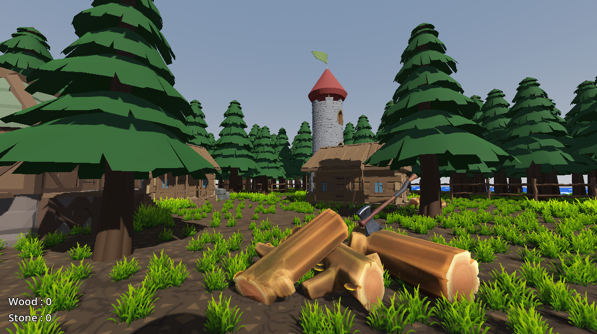
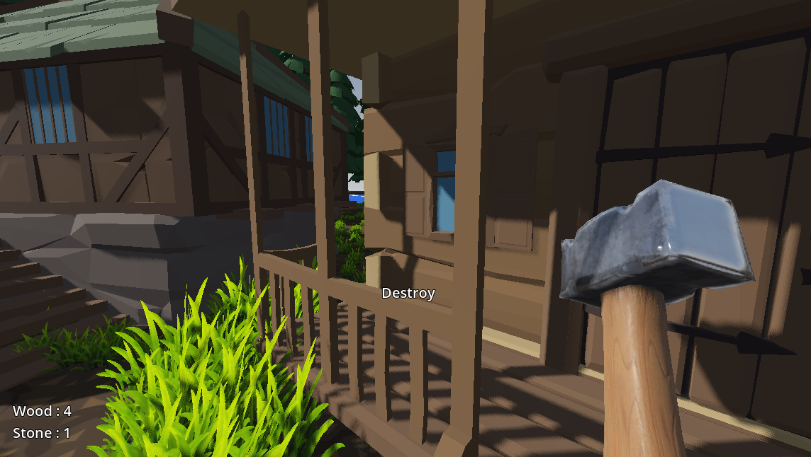
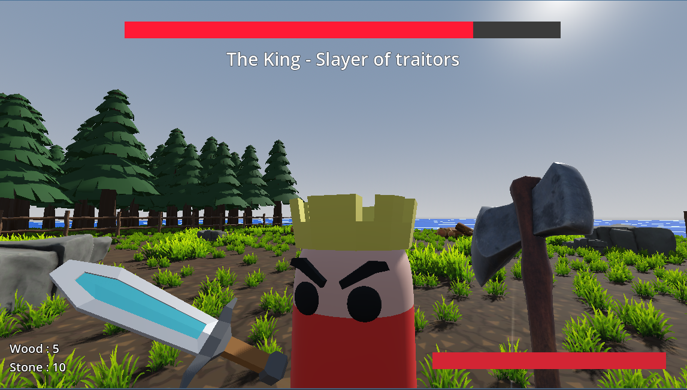
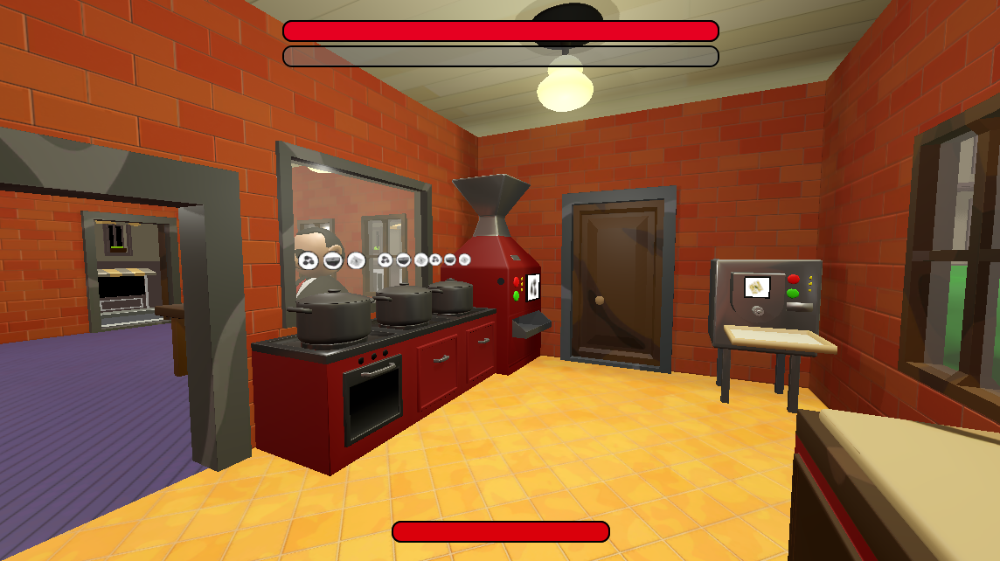
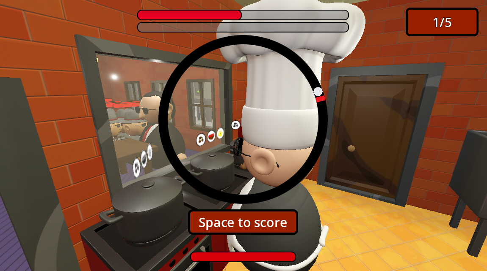
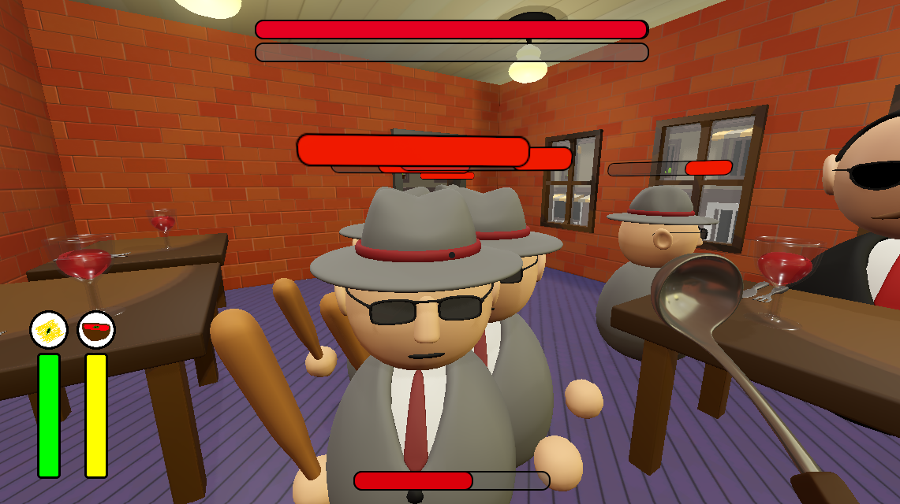

I make games using mainly the Godot game engine and also Blender for 3D models, textures and animations.



Life at Sea
This game was made in a week with absolutely zero knowledge about game development. Its purpose was to learn about basics in a limited amount of time.
In Life at Sea, the player picks up an axe and a hammer to destroy what remains of an abandoned village in order to build a boat and finally live a life at sea.
But when he destroys the king's tower, it's too much! The player must defeat him to finally leave.
Full Playthrough available below!



BossChef
BossChef is a game we made with a friend as a student project. Since the game is made up of different mini-games, we each worked on one of them separately. I then combined everything into the main game, adding the UI and a combat system.
The player takes on the role of a mafia boss's cook/bodyguard (times are tough and staff are expensive). To finish the game, they must prepare five servings of spaghetti bolognese for him while defending him against thugs from a rival gang. If the boss dies, the game is lost; if he's full, it's a win!
The player cooks while playing different mini-games (rhythm, precision, and speed games). To play these games, they need the right utensil: a gun, a knife, or a ladle. While he cooks, enemies arrive in waves to attack the Boss. To defend him (and himself), the different utensils have different effects: range attacks, quick attacks, area damage.
Full Playthrough available below!